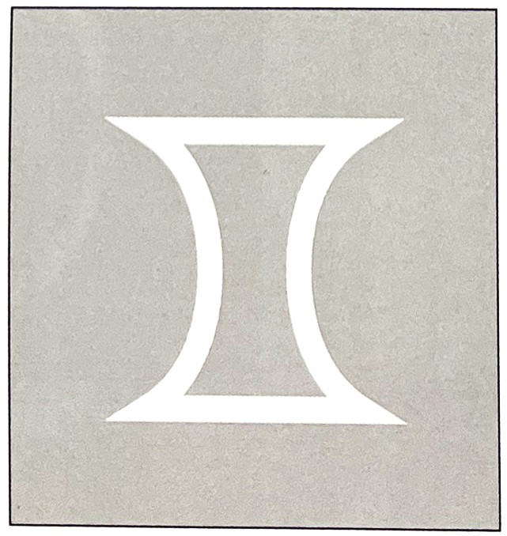
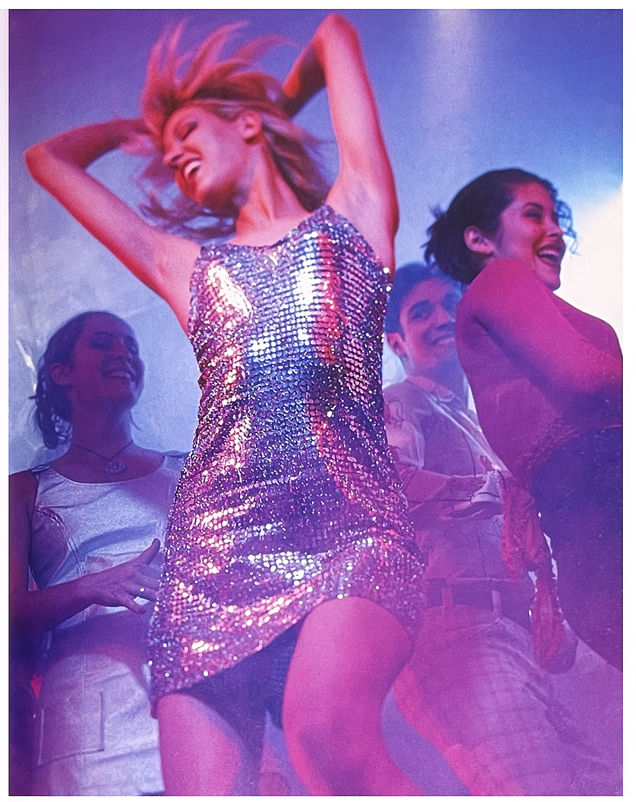
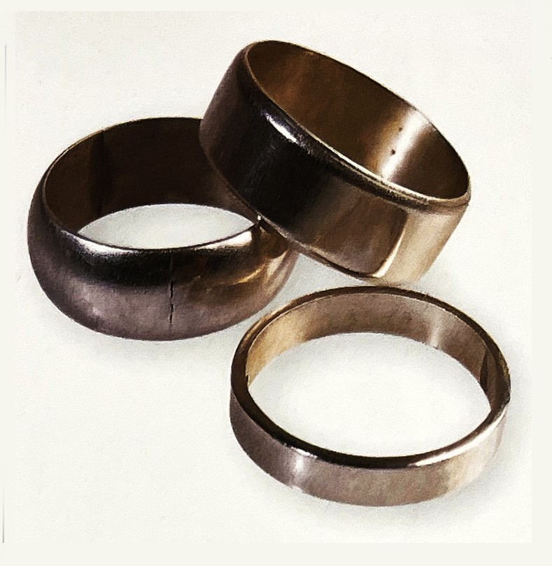

긍정적 감정과 상징: 순수, 순결, 진실함의 시험, 달
부정적 감정과 상징:
연상되는 자연/자연물: 달
정치.종교적 상징: 아메리카 인디언 호피족-불의 신,
이집트 이시스(고대 이집트의 풍요의 신), 세계의 동정녀
힌두교 브라마(빨강과 함께), 창조자

은색의 심볼[3]
은색의 힘[2]금은 노랑에서 변형된 색채를 낸다. 은도 밝은 회색을 띤 하얀빛을 머금고 있다. 귀금속으로서 은은 결정과 같은 이미지이다. 빛나는 하양이면서 금보다 단단한 촉감을 느끼게 한다. 유연하면서도 세련된 느낌이다. 은은 아주 오래전부터 금의 자매였다. 금만큼 가치가 높았단 이야기이다. 그래서 단순히 보석을 넘어 지불 수단으로 이용되기도 했다. 은색은 이런 가치를 상징한다. 그럼에도 금과 은은 다르다. 금이 광채가 나는 태양의 남성성을 담고 있다면 은에서는 여성성이 느껴진다. 서늘하고 차가운 은색은 달의 광채를 연상케 한다. 이는 우리 삶에 주기적 영향을 주는 여성성으로 대변할 수 있다.
고대로부터 우린 신체 기관을 별과 연관지었다. 비장(聛臟)은 토성에, 폐는 수성에, 담즙은 화성에, 신장은 금성에, 간은 목성에, 가슴은 금빛 태양이었다. 은빛 달은 다름 아닌 뇌였다.
은색의 뇌는 결합과 균형의 장소다. 지나간 추억의 보금자리로서 옛 감동이 안전하게 보관된 곳이라고 할 수 있다. 은색에는 생각하고 행동하는 태양(남성성)의 마음이 없다. 달의 영향력 아래 있어서다. 그래서 여성 혹은 모계 사회를 상징하는 검정과 가까우며 파랑과 초록하고도 공통점을 지닌다.
기원전 3세기 메소포타미아에서는 은이 금보다 더 대접을 받았다. 사람들이 보석으로서 은을 모으고자 한 결과다. 경제 거래 수단으로서 은은 함무라비 시대의 은 동전에서 발견된다. 이들은 자국의 은광에서 은을 채굴했다. 페니키아 상인들은 이런 은을 이집트로 가져 갔고 수입된 페니키아 은은 '흰 곳'이란 이름으로불렸다. 이러한 은은 다른 종류의 금으로 여겨졌다.
그리스인들은 주로 아티카 지방에서 은을 발굴했다. 그리고 이를 아기론agyron이라 불렀다. 이는 '빛' 혹은 '빛나는 물체'란 뜨이다. 이 말에서 로마시대 때 은argentum이 유래한다.
로마제정 시기 역사가인 타키투스는 서기 100년경 게르만 민족도 은을 갖고 있었다고 밝힌다. 현재의 독일 비스바덴과 엠스휘덴 근처에서 은을 캣다고 전해진다. 독일에서 은 광산의 전성기는 16세게였다.
전성기를 누리던 은은 시간이 가면서 점차 두 번째로 밀려난다. 금을 높이 평가하면서 부터다. '금혼식'과 '은혼식', '금, 은, 덩메달' 등 말을 분석해 보면 금 다음에 은이 차지한다. 이를 좀 더 넓은 관점에서 보면 고대 모계 중심에서 가부장 문화로 변모해간 사회상도 연관되어 있다.
색채 심리학에선 은색을 금색만큼 특별히 다루지 않는다. 홀로 존재하는 고유의 색이 아니고, 특별히 매혹적이지도 않다는 게 그 이유다. 오직 광고, 디자인, 보석 패션 분야에서만 이 색을 종종 언급할 뿐이다.
은색이 만약 금색과 결합한다면 그 전보다 가치가 더욱 빛날 수 있다. 그럼에도 은색은 금색과 같이 따뜻함, 진실성 등 성향을 갖추지 못했다. 은색은 본질상 차갑고 내향적이며 합리성을 띤다. 금색과는 달리 의도적인 거부, 자제심, 감정의 억제 등 의미를 내포하고 있다.
은색에는 화려함과 매혹적인 성향이 깃들어 있다.[1]
그래서 은색을 사용한 제품이나 포장은 고귀하고 값지다는 인상을 준다. 거부감 없이 포용하는 자세를 나타내 품위마저 느기게 한다. 국민들이 금이나 은을 어떻게 받아들이는가 하는 문제는 사회 수준과 직결된다. 금색보다 은색을 멀리하는 현상에 대해선 학자드은 얘기할 가치도 결론도 없다고 주장한다.
은색(Silver)의 심리학[2]은색의 성격은 ‘잔잔한 물이 더 깊은 법이다’라는 구문에 함축되어 있다. 은색 성향의 사람들은 영적인 조화를 끊임없이 열망한다. 은색은 우주적 지성의 원줄기이다.
은색 성향의 사람들은 빠르고 통찰력 있는 이성을 지녔고, 편협하지 않으며, 다른 사람들에게는 그들만의 사고방식이 있다는 것을 인정해서 굳이 그들의 의견을 바꾸려고 애쓰지 않는다.
은색은 절대로 우두커니 서있지 않는다. 이들은 달이 찼다 기울었다 하듯이 계속해서 변화를 추구한다.
은반지는 밝은 보름달의 표면과 같고 자연의 규칙적인 순환을 조장한다.[1]
이들의 인생은 항상 유동적이며 바다와 파도가 넘실거리는 모습처럼 항상 변화한다. 사람들을 설득하는 직업일수록 은색의 영향을 받는다. 물론 은색에도 단점이 있다.
“그런 척하자”라는 은색 성향이 실질적이지 않은 환상만이 존재하는 관계 속에 나타난다. ‘영화’속에 나오는 배우에게 빠져있는 사람이 이런 면모를 여실하게 보여준다. 이 성향의 사람들은 변덕스러운 기질을 지니고 있어 미덥지 못하고 교할한 사람이 되기 쉽다.
이들은 파악하기가 매우 어려우며, 사회에 대해 매우 이상한 태도로 일관한다. 은색의 성향 중에 가장 큰 단점은 바로 핵심이 무엇인지 파악하지 못한다는 점을 들 수 있다.
또한 우유부단한 성격도 가지고 있다. 정신분열도 은색의 부정적인 영향을 받은 것이다. 하지만 이들은 자신의 주위에 있는 사람에게 진실을 비춰주는 능력이 있다. 은색 성향의 사람들은 참을성이 대단해서 ‘길이 멀어지면 마음도 멀어진다.’는 말이 통하지 않는다. 그 대신 이들은 당신의 궤도 내에서 밝게 빛난다. 천성적으로 까다로운 성미를 지닌 이들은 스타가 될 자질을 가지고 있으며 아름답다. 이들은 꿈꾸기를 좋아하고, 이들의 이야기는 당신의 마음을 사로잡을 것이다.
틴트와 셰드[2]은색 안에는 광채가 있어서 틴트와 셰드가 존재지 않는다.
[참고문헌]
[1] 몸과 마음을 치료하는 색채, 릴리안 베르너 본즈, 번역 한창환, 도서출판 국제, 2008.1,10.
[2] 색의 힘, 하랄드 브램, 번역 이재만, 일진사, 2010.5.20.
[3] 색채 디자인 교과서, 문은배 지음, 길벗, 2010.12.28
....
....
....
....